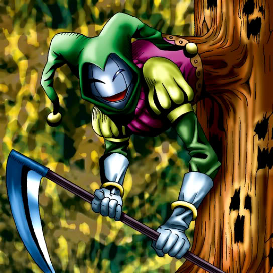

Wood Clown

STATS
ATK: 800
DEF: 1200DECK COST
Deck Cost per Card: 20Fusion List (18 Possible Fusions)
- Wood Clown + Abyss Flower = Bean Soldier
- Wood Clown + Ancient Jar = Minomushi Warrior
- Wood Clown + Charubin the Fire Knight = Flame Swordsman
- Wood Clown + Cyber-Stein = Cyber Soldier
- Wood Clown + Dancing Elf = Celtic Guardian
- Wood Clown + Fire Reaper = Zombie Warrior
- Wood Clown + Hinotama Soul = Charubin the Fire Knight
- Wood Clown + Jinzo #7 = Cyber Soldier
- Wood Clown + Man Eater = Bean Soldier
- Wood Clown + Mechanical Snail = Cyber Soldier
- Wood Clown + Mechanical Spider = Cyber Soldier
- Wood Clown + One-Eyed Shield Dragon = Dragon Statue
- Wood Clown + Pot the Trick = Minomushi Warrior
- Wood Clown + Shadow Specter = Zombie Warrior
- Wood Clown + Stone Ghost = Minomushi Warrior
- Wood Clown + The 13th Grave = Armored Zombie
- Wood Clown + Wicked Dragon with the Ersatz Head = Dragon Statue
- Wood Clown + Wings of Wicked Flame = Charubin the Fire Knight